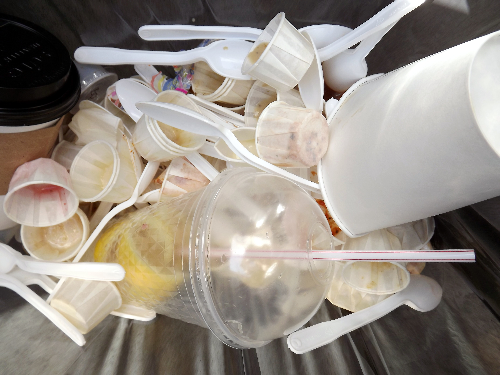

Single-use plastic waste, by Dennis. Source: Pixabay
About this page
This site is created by web developer Anh Pham, who is concerned about the impact of plastic waste, especially plastic straw, in the environment. This purpose of this site is to educate people about this issue.